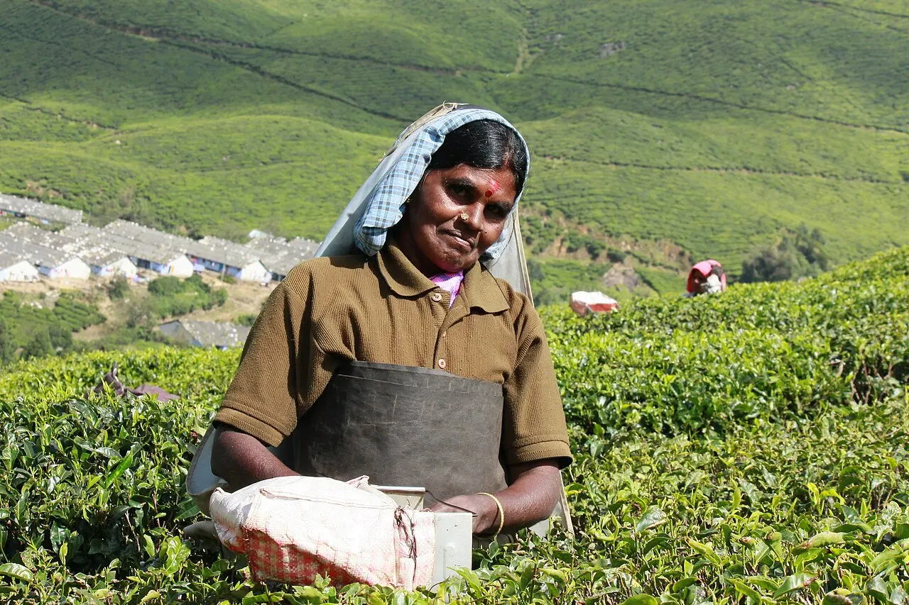

Places covered
Gangtok → Pelling → Darjeeling
Your day-by-day journey
Suggested itinerary. Attractions, travel times and arrangements are subject to your written quote and local conditions.
Day 1
Arrival in Gangtok. Meet the local representative (if arranged), transfer to the hotel and check in. Depending on arrival time, visit MG Marg, Enchey Monastery and Tashi Viewpoint. Overnight in Gangtok.
Day 2
Visit MG Marg, Enchey Monastery and Tashi Viewpoint. Explore nearby streets and local food or craft markets if time permits. Overnight in Gangtok.
Day 3
Visit Rumtek Monastery and Banjhakri Falls (road permitting). Continue sightseeing in Gangtok at a relaxed pace, with stops for meals. Overnight in Gangtok.
Day 4
Travel from Gangtok to Pelling (journey time to be confirmed). After arrival, Visit Pemayangtse Monastery and Rabdentse ruins. Explore nearby streets and local food or craft markets if time permits. Overnight in Pelling.
Day 5
Visit Skywalk area and Khecheopalri Lake (road permitting). Continue sightseeing in Pelling at a relaxed pace, with stops for meals. Overnight in Pelling.
Day 6
Travel from Pelling to Darjeeling (journey time to be confirmed). After arrival, Visit Tiger Hill sunrise (weather permitting) and Ghoom Monastery. Explore nearby streets and local food or craft markets if time permits. Overnight in Darjeeling.
Day 7
Visit Batasia Loop, Himalayan Mountaineering Institute and tea garden viewpoint. Continue sightseeing in Darjeeling at a relaxed pace, with stops for meals. Overnight in Darjeeling.
Day 8
After breakfast, check out from Darjeeling and transfer to the agreed departure point. Plan sufficient time for road conditions, security checks and onward travel.
Before you travel
Accommodation, meals, transport, tickets, permits, inclusions and exclusions are confirmed only in your written quotation. Share accessibility needs, children's ages and your preferred pace when enquiring. Activities depend on weather, local access and availability.
Frequently asked questions
Can this itinerary be customised?
Yes. Modi Holidays can tailor the route, hotel category, pace and sightseeing to your travel dates and preferences.
Are hotels and departure dates confirmed?
No. Hotel names, transport, inclusions and dates are proposed until confirmed in writing after your enquiry.